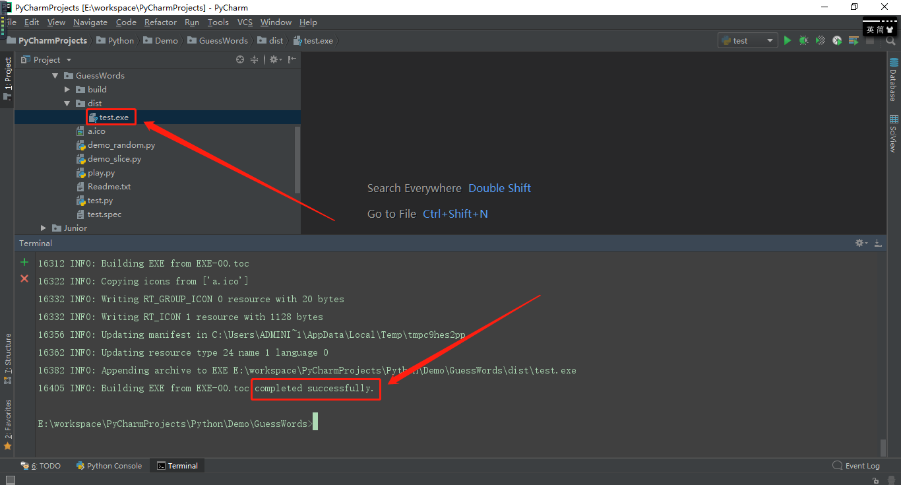

使用命令：pip install PyInstaller时可能会由于网络的问题出现以下问题：
pip._vendor.urllib3.exceptions.ReadTimeoutError:HTTPSConnectionPool(host='files.pythonhosted.org', port=443): Read timed out.
此时修改命令为：pip install --default-timeout=1000 PyInstaller
问题未解决出现了其他问题，使用镜像下载也无法解决；
问题解决：卸载pip，python -m pip uninstall pip，然后在pycharm的settings-project interpreter那里提示缺少文件，直接点击下载，下载的是旧版本pip10.0.1，再使用命令pip install PyInstaller安装成功；
# dos窗口执行以下命令
# 卸载pip
python -m pip uninstall pip
# 通过pycharm提示安装pip（这里会安装到旧版本10.0.0.1），或者到官网上下载pip再通过命令安装
# 此时安装PyInstaller成功
pip install PyInstaller（旧版本升级提示使用该命令：python -m pip install --upgrade pip，但升级失败，仍旧提示升级，或者出现AttributeError: 'NoneType' object has no attribute 'bytes'，这里使用网上给的方法：easy_install -U pip，第一次可能失败，多试几次，成功后使用pip show pip查看版本）
# pip升级
# 升级失败
python -m pip install --upgrade pip
# 改用命令，升级成功
easy_install -U pip
# 查看版本
pip show pip
-i icofile：生一个带有图标的exe程序，图标必须是.ico的格式，图片转换成ico格式可以通过比特虫网站
-F：打包成一个独立的exe文件，否则是一个带各种dll和依赖的文件夹
-W：使用窗口界面，无控制台
-c：使用控制台，无窗口界面（小写的c）
-D：创建一个目录，里面包含exe及其他一些依赖性文件
pyinstaller -h：可以查看参数cmd下，在哪个目录下运行该pyinstaller -F xxx.py命令，哪个目录下就会生产build和dist文件夹以及.spec文件，其中.exe文件在dist文件夹下；
当打包目录和源代码目录不一致时，需要用绝对路径；
打包后只需要exe文件即可，其他文件可删除，在没有python的环境下可以直接运行（因为pyinstaller打包了python解析器和脚本）；
针对下边这个源代码进行打包：
pyinstaller -F -c -i a.ico test.py
# -c需要终端输入
# 我一起放到了GitHub里了（是一个终端猜词小游戏）：https://github.com/NoobZeng/GuessWords/blob/master/test.exe
注意：图标的大小大小要适当，太大会报错：ValueError: read length must be non-negative or -1
将图标从dist目录移到其他地方，如果是看到python样式的，需要移动一下位置；